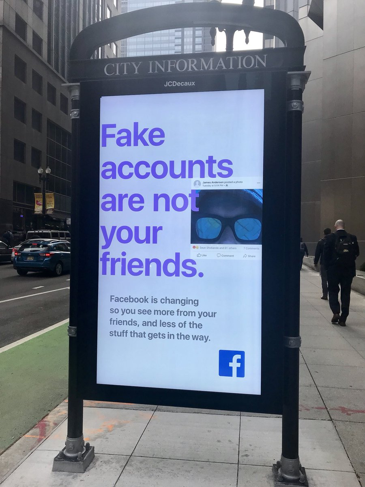

What Can Facebook Do Using Augmented Reality?
In the past, Facebook has been using users' data for its own benefit. What's more, it had manipulated users' feeds in order to do research on how people react to filtered content; the research was conducted without users' consent. And with the data it got, Facebook can better target ads back at its users. As technology progresses, what would the future look like if Facebook continues doing the same thing using augmented reality? This artwork alters the recent campaign Facebook posts on the street to show what can happen.
original campaign

altered version
Artist Jiaming Mao, Email jmao3@artic.edu